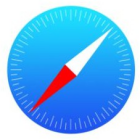

Chrome是一款由Google公司开发的网页浏览器，该浏览器基于其他开源软件撰写，包括WebKit，目标是提升稳定性、速度和安全性，并创造出简单且有效率的使用者界面。

Mozilla Firefox，中文俗称“火狐”（正式缩写为Fx或fx，非正式缩写为MF），是一个自由及开放源代码的网页浏览器，使用Gecko排版引擎，支持多种操作系统，如Windows、Mac OS X及GNU/Linux等。该浏览器提供了两种版本，普通版和ESR（Extended Support Release，延长支持）版，ESR版本是 Mozilla 专门为那些无法或不愿每隔六周就升级一次的企业打造。Firefox ESR 版的升级周期为 42 周，而普通 Firefox 的升级周期为 6 周。
Internet Explorer，是微软公司推出的一款网页浏览器。原称Microsoft Internet Explorer(6版本以前)和Windows Internet Explorer(7、8、9、10、11版本)，简称IE。在IE7以前，中文直译为“网络探路者”，但在IE7以后官方便直接俗称"IE浏览器"。
Opera浏览器，是一款挪威Opera Software ASA公司制作的支持多页面标签式浏览的网络浏览器，是跨平台浏览器可以在Windows、Mac和Linux三个操作系统平台上运行。Opera浏览器创始于1995年4月。2019.1.31日最新版本58.0(58.0.3135.53)。 2016年2月确定被奇虎360和昆仑万维收购。2018年6月29日，Opera向SEC提交了上市申请。
Safari是苹果计算机的操作系统macOS中的浏览器，使用了KDE的KHTML作为浏览器的运算核心。Safari 是一款浏览器、一个平台，也是对锐意创新的公开邀请。无论在 Mac、PC 或 iPod touch 上运行，Safari 都可提供极致愉悦的网络体验方式，更不断地改写浏览器的定义。